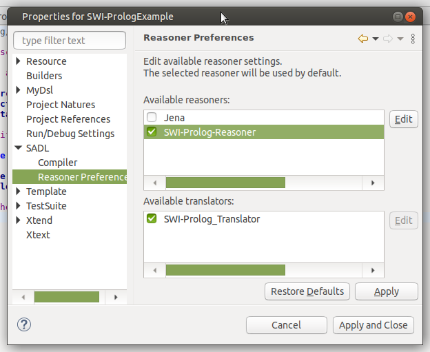
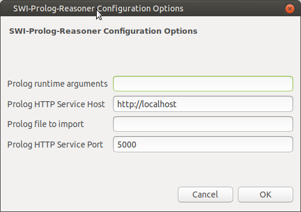

Note: These plug-ins currently run on Windows, Mac, and Linux.
SWI-Prolog is a popular flavor of Prolog and one which is particularly well-suited for use with OWL due to its ability to directly load RDF Data.The SWIPrologReasonerPlugin and its associated SWIPrologTranslatorPlugin are designed to work with SWI-Prolog running as an HTTP server. When SWI-Prolog is properly installed, the SADL plug-ins will start SWI-Prolog, create the necessary Prolog files to load the OWL files and the rules generated from SADL by the SwiPrologTranslator, run inference, and query the knowledge base.
Note: currently the SADL IDE or SadlServer pass OWL and Prolog files to the SWI-Prolog service. Therefore, the SWI-Prolog service must be running on a machine that can share files with the SADL IDE or SadlServer. In the future this constraint could be relaxed so that the passing of information to the service is not file-based.
Both the SWI-Prolog reasoner plug-in and the associated translator plug-in require that SWI-Prolog be available as a service. The translator uses the service to verify that built-in predicates used in rules are actually defined and the reasoner uses the service to do inference and to process queries.
Assuming that a conforming SWI-Prolog service is not already available, please follow these instructions to set up a local service.
The SWI-Prolog reasoner/translator pair are included with the SADL 3 distribution starting with release 3.2.0 in October, 2019. Therefore, no special SADL installation is currently required.
To use SWI-Prolog as the reasoner for a given SADL project, open the Project Properties dialog box and expand the SADL topic. Click on SWI-Prolog-Reasoner to select it as the project's reasoner. Then click on SWI-Prolog_Translator to select it as the project's translator.

If the SWI-Prolog HTTP service is running other than on the default http://localhost, port 5000, configure the proper values by clicking on the Edit button next to the reasoner plug-in selection. Remember that currently the IDE or SadlServer must be able to run the executable and share files.

Note: because the functions in SadlBuiltinFunctions.sadl in the ImplicitModel folder are reasoner-specific, they will be different when the SWIPrologReasonerPlugin is selected. That means that if models contain concept definitions that have the same name as Prolog predicates, these models will need to be modified to add prefixes to disambiguate.
Once the SWI-Prolog reasoner and translator have been selected and configured for a project, models can be tested and queries executed as desired. Rules will be translated to Prolog and the SWI-Prolog service will load these and the OWL models as needed to validate rules, do inference, and execute queries.
There are several options available when querying with SWI-Prolog.
The simple model and queries below illustrate these three forms. Each of the queries shown will result in the same query being sent to the SWI-Prolog service and the same results will be returned.
Shape is a class described by area with values of type float.
{Circle, Rectangle} are types of Shape.
radius describes Circle with values of type float.
height describes Rectangle with values of type float.
width describes Rectangle with values of type float.
Rule AreaOfCircle: if x is a Circle and r is radius of x then area of x is PI * r^2.
Rule AreaOfRectangle: if x is a Rectangle then area of x is height of x * width of x.
MyCircle is a Circle with radius 1.0.
MyRect is a Rectangle with height 2.0, with width 3.0.
Ask: x is a Shape and x has area ar.
Ask: select
x, ar
where x
is a
Shape
and x
has area
ar.
Ask: "select PVx PVar where holds('http://www.w3.org/1999/02/22-rdf-syntax-ns#type',PVx,'http://sadl.org/Model.sadl#Shape'),holds('http://sadl.org/Model.sadl#area',PVx,PVar)".
Ask: "holds('http://www.w3.org/1999/02/22-rdf-syntax-ns#type',PVx,'http://sadl.org/Model.sadl#Shape'),holds('http://sadl.org/Model.sadl#area',PVx,PVar)".
The actual query sent to the SWI-Prolog service in each case is that shown in the last Ask. For more information about the holds predicate, see the working example below.
The following files are created in the OwlModels folder, if they do not
already exist, when the SWIPrologTranslatorPlug is invoked for a project.
swi-run-prolog-service.pl -- this file is passed to the
SWI-Prolog executable on the command line and starts the service
(it is currently assumed that SWI-Prolog
will run on the same machine as the SADL IDE or SadlServer and is
started for each inference session)
swi-prolog-service.pl -- this file is loaded by the
previous Prolog file and sets up the HTTP service used by the reasoner for
inference and query-answering and by the translator for validation
swi-standard-declarations.pl -- contains standard
declarations and loads standard libraries for semantic web; loaded by
first file in this list
swi-custom-predicates.pl -- this is a place for the
user to define custom predicates and/or to load other files; it is loaded
by the first file in this list
In addition to these files, each SADL model (.sadl file) generates an OWL (.owl) file and a Prolog (.pl) file.
The example above illustrates query syntax, but the queries will not return any results unless further knowledge is captured. The reason for this is that the queries each match on instances of the Shape class but the only instances in the example are MyCircle, an instance of the Circle class, and MyRect, an instance of the Rectangle class. SWI-Prolog does not, out of the box, do transitive closure over class or property hierarchies, so MyCircle and MyRect are not known to be instances of the Shape class. Therefore the queries to retrieve values will not match on these instances. For this example to work, we must add a rule to infer that an instance of a Circle and an instance of a Rectangle are also instances of the Shape class., which follows from the definitions of Circle and Rectangle as sub-classes of Shape.
We can add such a rule (and others to do additional OWL reasoning) in either of two ways.
To illustrate adding such a rule to the swi-custom-predicates.pl file, open this file in an editor and add the following Prolog rule.
holds('http://www.w3.org/1999/02/22-rdf-syntax-ns#type', I, Csuper):- holds('http://www.w3.org/2000/01/rdf-schema#subClassOf', C, Csuper), holds('http://www.w3.org/1999/02/22-rdf-syntax-ns#type', I, C).
In Prolog fashion, the rule head (conclusion) is to the left of the ":-" symbols and the rule body (conditions) is to the right. Note that the holds/3 predicate is defined in swi-run-prolog-service.pl.
holds(P,S,O) :- rdf(S,P,O).
Thus for a given predicate (P), subject (S), and object (O), if there is a triple in the ontology rdf(S,P,0), then there will be a corresponding holds(P,S,O). Just as the transitive closure rule above infers additional holds(P,S,O), each translated rule that infers triples will cause a holds(P,S,O) to be inferred. Therefore our queries over the inferred model use the holds predicate rather than the rdf predicate.
Alternatively, we could add a SADL rule to our SADL model or to an imported model. Such a SADL rule would look like this:
Rule TCC:
if holds("http://www.w3.org/2000/01/rdf-schema#subClassOf",
C,
Csuper)
and
holds("http://www.w3.org/1999/02/22-rdf-syntax-ns#type",
I,
C)
then
holds("http://www.w3.org/1999/02/22-rdf-syntax-ns#type",
I,
Csuper).
The SWIPrologTranslatorPlugin will translate this rule to Prolog and place it in the .pl file corresponding to the SADL file.
holds('http://www.w3.org/1999/02/22-rdf-syntax-ns#type',
PVI,
PVCsuper) :-
holds('http://www.w3.org/2000/01/rdf-schema#subClassOf', PVC,
PVCsuper),
holds('http://www.w3.org/1999/02/22-rdf-syntax-ns#type', PVI, PVC).
As all variables in Prolog
must start with an uppercase letter, the translator prepends "PV" (Prolog
Variable) to each variable name in the SADL rule.
When the SWI-Prolog reasoner for SADL is requested, SADL will start the service provided that the executable (swipl-win.exe for Windows, swipl for Mac and Linux) is on the path. Make sure that you can start SWI-Prolog from a command window, demonstrating that the executable is on the system path.
If the SWI-Prolog service is running other than on localhost, port 5000, the service must be configured for each project in the SWIPrologReasonerPlugin configuration options, as described above.
If the Prolog service is starting, further debugging can be performed by interacting directly with SWI-Prolog. The general procedure is as follows.